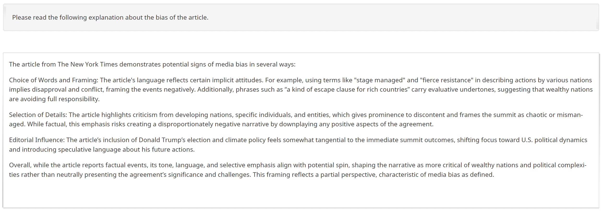
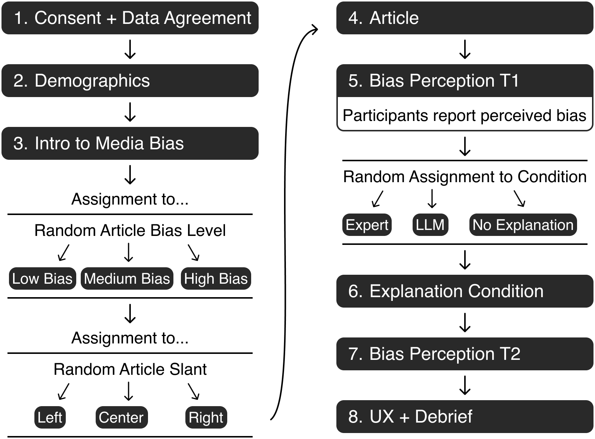
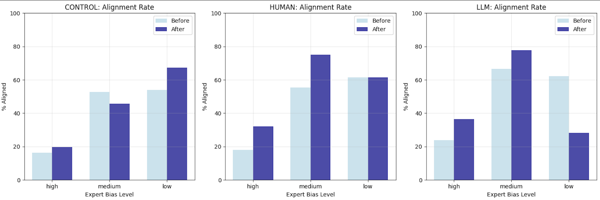

Plausibility Machines: How LLM-Generated Explanations Shape Media Bias Perception
Highlights
- LLMs like ChatGPT could explain bias to news readers, but are the explanations as effective as expert explanations?
- Study compared how people rate bias of an article before + after reading a text explaining the bias (either written by expert or LLM)
- Explanations changed how people perceive bias
- LMM explanations influenced peoples' perceptions more
- Bias ratings were more accurate after explanation
- Exception: People perceived more bias than there was after they read LLM explanations of articles with no to little bias
- LLM and prompts extremely important: If prompted to identify bias, LLM will identify bias, no matter how little bias there is

Example of an explanation shown in the study.

Process of the study.

Bar chart showing participant-expert alignment in bias perception after reading LLM vs. human explanations vs. control. Alignment increases after explanations but is lower after reading LLM explanations on low bias articles.
Abstract
The prevalence of bias in news media can undermine democratic processes by reinforcing partisan divides, eroding public trust, and influencing electoral results. Even though consumers often overlook biases, interventions to help audiences recognize them remain limited. Large language models (LLMs) show promise for generating explanations to disclose and mitigate bias in news articles, but their effectiveness remains untested. We conduct a randomized controlled trial with U.S. adults (n=504) reading a news article to measure whether LLM-generated explanations, presented without source attribution, can change audiences’ perception of media bias, and how perception changes compare to human-written explanations and no-explanation controls. We find that explanations significantly change bias perception compared to controls. However, only LLM explanations increase bias perception significantly. Further, political alignment with an article increases bias perception after LLM explanations but not after human explanations. Descriptively, LLM explanations produce false positives on low-bias content and reduce participant-expert alignment, whereas human explanations have more conservative patterns but are overall more accurate. We discuss the potential of LLMs in media literacy interventions and their role as “plausibility machines” that tend to produce false positives by overidentifying bias, leading neutral content to be perceived as biased.
BibTeX
@article{Wessel2026Plausibility,
title={Plausibility Machines: How LLM-Generated
Explanations Shape Media Bias Perception},
author={Martin Wessel and Smi Hinterreiter and Karsten Donnay and Jürgen Pfeffer and Marc Erich Latoschik and Timo Spinde},
journal={Under Review},
year={2026},
url={https://media-bias-group.github.io/LLMExplanations_ProjectPage/}
}